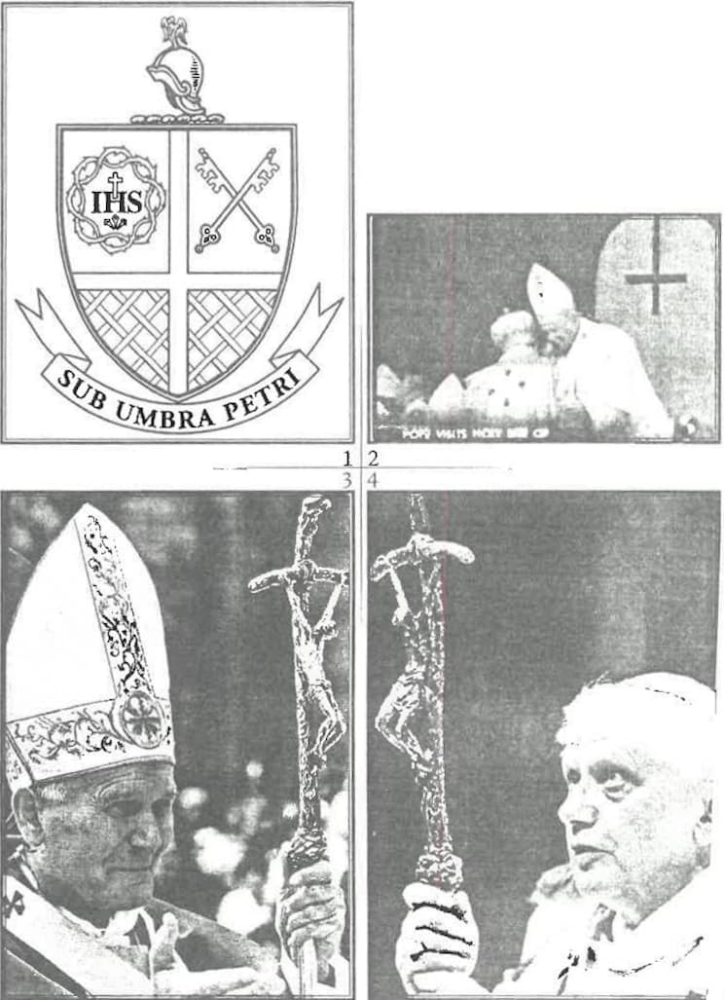
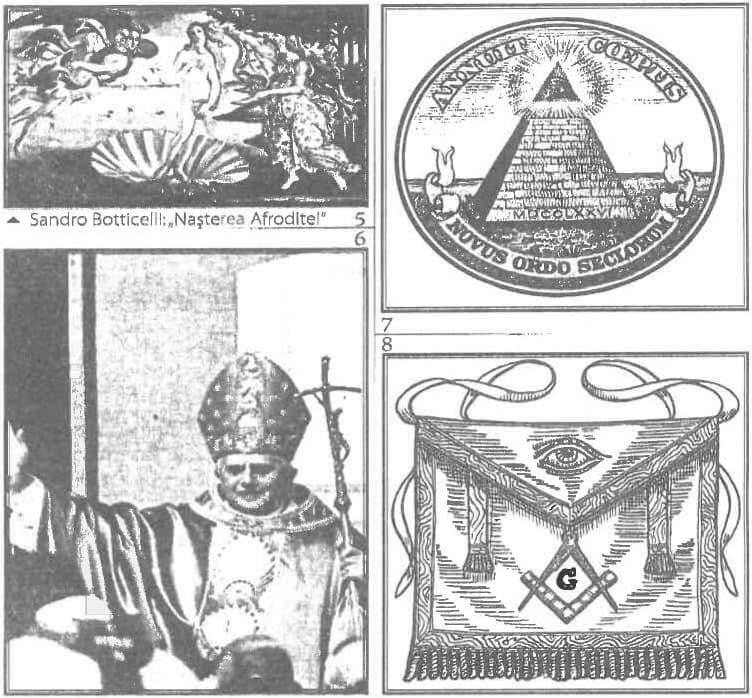
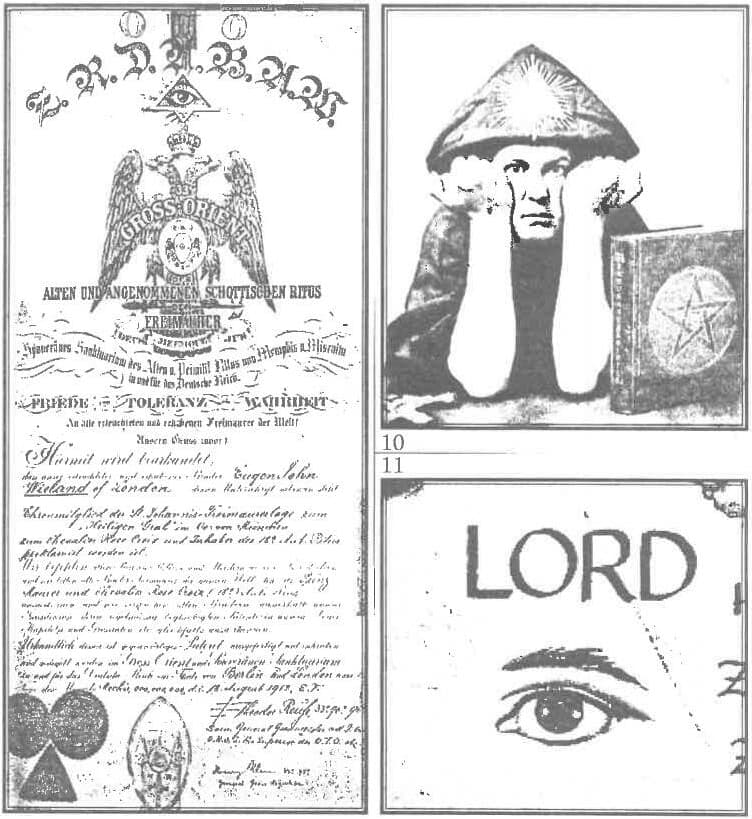

Cuviosul părinte Iustin Popovici zice: „În istoria neamului omenesc sînt trei căderi însemnate: a lui Adam, a lui Iuda și a papei [Romano-Catolic].” Căci Romano-Catolicismul stă împotrivă Dumnezeu-Cuvîntului Hristos nu numai pentru că este eretic (adică nu învață buna Lui vestire, ci strică sfintele dogme ale credinței) și deci păgîn, dar și prin aceea că Biserica Romană, prin întîi-stătătorul ei, chiar s-a pus pe sine în locul lui Hristos! Astfel - în anul 1870, la Conciliul Vatican I - toate rătăcirile sale din trecut s-au contopit în dogma „infailibilității papei, care a ajuns atot-dogma papismului (întărită și prin al doilea Conciliu de la Vatican, din anii '60 ai veacului trecut). Negreșit, aceasta — adică a mărturisi că papa, un om, poate judeca și hotărî fără greșeală întru cele ale Duhului - e cea mai mare hulă împotriva Dumnezeu-Omului Hristos și a Duhului Sfînt-Dumnezeu. Pe de altă parte — precum arată același Cuvios Iustin Popovici — „dogma aceasta are o însemnătate cît se poate de mare pentru întreaga soartă a Europei [și a lumii întregi], mai ales pentru apocalipsa ei, în care deja a pășit. Prin dogma aceasta, toate umanismele europene și-au atins idealul și idolul: omul a fost propovăduit drept cea mai mare zeitate, atot-zeitate. Panteonul european umanist și-a dobîndit Zeus-ul. […] [Căci] - uzurpînd, prin dogma infailibilității, în folosul său (adică în folosul omului) toată puterea și toate drepturile care sînt numai ale Dumnezeu-Omului Domnului Hristos - papa s-a auto-propovăduit, în fapt, biserică în biserica papistă și a ajuns în ea «totul în toate». Un «atot-țiitor» sui generis. [Altfel spus], în Biserica Romano-Catolică locul Dumnezeu-Omului îl ocupă «Vicarius Christi» (Locțiitorul lui Hristos), iar Dumnezeu-Omul a fost surghiunit în cer.”
Robert Bellarmino, vestitul cardinal iezuit din veacul al 16-lea și un „sfînt” al Bisericii Romano-Catolice, zice așa: „Toate numele care I se dau în Scriptură lui Christ prin care se arată că El este deasupra Bisericii, toate aceste nume se potrivesc și papei!” Publicația pariziană Catholique Nationale, în numărul său din 13 iulie 1895, cuprinde următoarea zicere a arhiepiscopului de Veneția, mai tîrziu papa Pius al X-lea: „Papa nu este numai reprezentantul lui Jesus Christ, dar este Însuși Jesus Christ, ascuns sub învelișul cărnii…”
Deci papa este „vicarul”, „înlocuitorul” lui Dumnezeu pe pămînt. Iar în limba elină, „în loc de” se zice „anti”, care înseamnă totodată și „împotriva”. Deci latinescul „Vicarius Christi” se tălmăcește în elină prin „Antihrist”, înlocuitorul și potrivnicul lui Hristos-Dumnezeu! Așa au înțeles și unii din Sfinții Părinți ai Bisericii, precum și Protestanții.
Fiindcă Hristos-Omul nu a fost preot, iar Antihristul va urma întru totul petrecerea Lui pămîntească, așadar nu va fi în tagma preoțească, ci „va veni ca un împărat Roman”, precum zic Sfinții Părinți care au tîlcuit Cartea Apocalipsei. Căci el va fi acel „Mesia” văzut de Iudei ca împărat pământesc, povățuitor politic și militar, sub al cărui sceptru ei ar urma să refacă o așa-zisă „împărăție a lui David” și să stăpînească lumea. Pe de altă parte, orice papă eretic a fost și este împărat pămîntesc! Căci Vaticanul, deși strîmt, e totuși un stat liber, suveran și independent. Dar nu asta are însemnătate, ci faptul că papa este cel mai puternic conducător (el face și desface din umbră politica pămîntească) și cel mai bogat om din lume (măcar că nu se laudă cu asta). Iar acest om stăpînește peste mai mult de un miliard de supuși păgîni, întunecați la minte și sălbatici, care i se închină precum unui zeu cu puteri depline. Și nimic nu-l împiedică pe „suveranul pontif” să lepede veșmîntul preoțesc și cârja (despre care vom vorbi mai jos), să-și împăturească frumos așa-zisa „mitră” în formă de plic și să le schimbe cu armura de oțel și cu întreita coroană, apucînd sabia și biciul plumbuit. N-ar fi de mirare, căci și alți papi au făcut aceasta în trecut! Se pare însă că ultimul papă nu va fi totuși Antihristul cel mare, ci mai degrabă acea „fiară ieșită din pămînt” pentru care citim la capitolul 13 al Apocalipsei. Căci Scriptura arată limpede că, la a doua venire a Mîntuitorului Hristos, drepta credință va pieri aproape cu desăvîrșire, apostazia (lepădarea de Hristos) stăpînind și asupra celor botezați și lumea întreagă crezînd în eresul Antihristului. Căci zice Mîntuitorul Hristos: „Dar Fiul Omului, cînd va veni, va găsi oare credință pe pămînt?” (Luca 18:8)1. Iar acest eres este acum pregătit de așa-numitul „ecumenism”, „religia unică” a viitorului, al cărei prooroc este nimeni altul decât papa Romano-Catolic! Iar în Apocalipsă (la capitolul 13:11) aflăm despre acel Prooroc Mincinos, înainte-mergător al Antihristului (un fel de Ioan Botezătorul pe dos), al povățuitorului politic și militar ce va împărăți cu puteri depline asupra Statelor Unite ale Lumii. La acel loc, Sfîntul Evanghelist Ioan zice așa: „Am văzut apoi altă fiară, ridicîndu-se din pămînt, și avea două coarne asemenea mielului, dar grăia ca un balaur.” Iar înțelegerea este aceasta (după Sfîntul Andrei al Neochesariei, cel care a alcătuit, după Sfinții Părinți dinaintea lui, singura tîlcuire adevărată a Apocalipsei): „Unii înțeleg că «fiara» aceasta este Antihristul. […] Iar noi socotim (după Irineu) că fiara aceasta de acum va fi într-adevăr un prooroc mincinos, care «va ieși din pămînt», adică din viața cea pămîntească și care se tîrăște pe pămînt. Se zice că va avea «două coarne asemenea cu ale mielului» pentru că, sub piele de oaie, va tăinui sălbăticie de lup ascunsă și mohorîre. Căci la început va arăta un chip de creștinătate. Sfîntul Irineu al Lyonului spune că acesta este sluga ajutătoare lui Antihrist și proorocul lui mincinos, care va primi puterea de a face semne și minuni, înaintea lui Antihrist, gătindu-i acestuia calea cea ducătoare la pieire. Și zice că acesta va grăi «ca un balaur», de vreme ce le va face și le va grăi pe cele ale diavolului celui începător de răutate”. Iar Apocalipsa urmează așa:
Așa încât nici nu mai are rost să ne întrebăm dacă ultimul papă va fi Antihristul însuși sau înainte-mergătorul lui, de vreme ce între aceștia nu e mare deosebire (decît aceea că cel dintîi va primi „toată puterea Satanei”). Destul ne este nouă să vedem cu ochii că papii sînt înainte-închipuiri vădite ale Antihristului. Pentru că ei înșiși nu se feresc să se arate astfel în priveliștea întregii lumii, chiar prin semnele pe care le poartă învederat, precum înțelegem din cele scrise mai jos:

Steagul papal înfățișează un scut împărțit în patru cîmpuri printr-o cruce întoarsă (fig. 1).
La fel, pe spătarul scaunului „fericitului părinte” de la Vatican vedem limpede semnul cel mai folosit de sataniștii din toată lumea: crucea întoarsă cu susul în jos (și goală, decupată în lemnul spătarului, adică făcută din… nimic)! (fig. 2) (Într-o altă fotografie, l-am văzut pe Ioan Paul al II-lea purtînd o cruce pe dos și la gît). Multă vreme nu am putut crede că Romano-Catolicii chiar se arată precum sînt, pînă cînd am înțeles îndreptățirea lor: ei vor să ne închipuim că aceasta e crucea lui Petru, care a fost răstignit cu capul în jos. Aceasta e o batjocură, firește (precum tot ce se petrece la Vatican); dar, chiar dacă papistașii ar crede cu adevărat ce mărturisesc, tot o hulă ar fi, pentru că noi nu ne închinăm lui Petru și crucii lui (precum de altfel fac Catolicii, pentru care sfinții nu sînt altceva decît zei, idoli).
Fără îndoială, înfricoșătorul „crucifix” al papei arată vădit negrăita ură a papismului împotriva lui Hristos. Luați aminte cîtă batjocură cuprinde această scursură de metal! Căci ce vedem? Forma unui trup omenesc mort demult, spînzurat în batjocură pe o așa-zisă „cruce” strîmbată în toate cele trei planuri. Acesta e „Răstignitul” pe care Talmudul Îl hulește în cuvinte pe care nici nu e bine să le știm. Crucea răsucită e un alt semn al satanismului Romano-Catolic și are o neînchipuit de întunecată istorie, fiind născocită de sataniști în al cincilea veac și folosită de magicienii antihriști. Pentru ei, ea însemnează „semnul Fiarei”. Această cruce a fost adusă întru folosință în Biserica Romano-Catolică de papa Paul al VI-lea, cel care a și adunat Conciliul Vatican II.
În fig. 3 și fig. 4, îl vedem pe fostul papă Ioan Paul II și pe actualul papă arătînd mulțimii acest cel mai drăcesc simbol.
Iar aici, privindu-l pe papa Benedict, am zice că el „adoră” crucea strîmbă, așa cum orice preot Catolic „adoră” „pișcotul sfînt” („ostia”, care pentru ei e „Trupul” lui Hristos). Te poți întreba ce „adoră” papa Benedict la această hidoasă „cruce”?
Din vremea pontificatelor papei Paul al VI-lea și al lui Ioan Paul al II-lea, crucea aceasta satanică e purtată necurmat în fața mulțimilor care se închină astfel unui simbol al Antihristului. La întronizarea sa, Papa Benedict XVI a purtat și el acest „crucifix” satanic, și mulțimile s-au închinat înaintea simbolului drăcesc. Astfel, papa nu a pierdut timpul și s-a grăbit a-și mărturisi credința lui de Iluminat, purtînd oculta cruce răsucită. Aceasta seamănă cu ceea ce citim la Apocalipsa 13, unde se vorbește de cele două Fiare: Antihristul și Proorocul cel Mincinos. Cum ziceam și mai sus, în acest capitol ni se spune că Proorocul cel Mincinos va pregăti venirea Antihristului, va avea toată puterea cea rea a acestuia și va sili toată omenirea să primească semnul Fiarei. Unul dintre cele mai însemnate stihuri este acela în care se zice că amîndouă Fiarele, înzestrate cu puteri suprafirești ce îi fac iubiți de oameni, vor fi cinstite de întreaga lume (Apocalipsa 13:3,4). (Eu nu încetez a mă mira cum de se închină credincioșii Catolici în fața papilor, care sînt toți unul mai urît decît altul, mai ruinat, mai asemănător diavolului. Uitați-vă la ochii lor!) Purtînd această cruce, papii de care am vorbit le arată tuturor ocultiștilor din lume că sînt hotărâți să fie liderii „religioși” ai întregii lumi, așa cum zice planul Noii Ordini Mondiale, adică al împărăției Antihristului.

În fig. 6, alături de satanica cruce strâmbă, papa Ratzinger poartă roba împodobită cu semnul scoicii. Priviși cele două mari scoici de pe pieptul robei papale! De ce o asemenea broderie? Dacă vom căuta simbolul scoicii în credințele păgîne și vom cerceta înțelesul ascuns al acesteia, vom vedea că este un simbol al lui Lucifer! Pentru antihriști, scoica o reprezintă pe Venus (Afrodita), care (potrivit mitologiei) s-a născut dintr-o scoică.
Iar Venus, ca planetă, este pentru toți ocultiștii nimic altceva decît corespondentul astral al lui Lucifer (steaua dimineții, „Luceafărul” nostru), pe care îl cinstesc ei!2 Astfel, simbolismul scoicii din tradiția ocultă este lămurit: Scoica=Afrodita=Venus=Lucifer. Deci, la întronizarea sa ca papă, Benedict-Ratzinger a purtat mantia lui Lucifer, iar „mulțimile au urmat Fiarei cu uimire, și au căzut cu fața la pămînt și au cinstit-o” (Apocalipsa 13:3, 4).
Despre acest simbol am vorbit și în numărul trecut, aici urmând să arătăm și alte înțelesuri ale acestuia. În fig. 7, îl vedem pe bancnota de un dolar, alături de formula în latinește Novus Ordo Seclorum, care înseamnă,„Noua Ordine Mondială”.
Ochiul în triunghi e un simbol deosebit de însemnat în Masonerie. Francmasonii cred că acest simbol ar fi ochiul atot-văzător al Marelui Arhitect. Dar, odată ajuns la gradul 33, „maestrul” află că acest ochi e al nimănui altcuiva decît al lui Lucifer-Satan!
În fig. 8, avem un șorțuleț purtat de Masoni, pe care se vede ochiul lui Satan. Următoarea imagine (fig. 9) arată certificatul de membru al organizației Ordo Templi Orientis, Ordinul Templier din Răsărit, o societate magică Germană înființată la începutul veacului al 19-lea, care prețuiește mult tehnicile sexuale și poartă ca semn același ochi încadrat în triunghi:
În Marea Britanie, conducătorul acestei organizații a fost cunoscutul satanist și magician negru Aleister Crowley. Crowley (fig. 10) a vruc să fie cunoscut ca Marea Fiară 666. Crowley purta o pălărie cu ochiul încadrat în triunghi:
În publicația Masonică intitulată, „Indiana Monitor and Freemason's Guide”, la pagina 104, aflăm înțelesul acestui simbol: „În cele mai multe limbi vechi asiatice, «ochi» și «soare» se exprimă prin același cuvînt, iar vechii Egipteni îl reprezentau hieroglific pe zeul lor cel mai mare, soarele-dumnezeu Osiris, printr-un ochi deschis, semn al soarelui, prin a cărui lumină avem puterea de a vedea și care privește el însuși în jos din mijlocul cerului și poartă de grijă tuturor făpturilor. Așa reprezintă și masonii atotștiința Marelui Arhitect al universului.”
Acest simbol ocult masonic și satanist a fost adoptat de Romano-Catolicism și poate fi găsit, de pildă, în St. Joseph Edition of the New American Roman Catholic Bible, precum vedem în fig. 11.
Pentru noi, aceasta nu e de nici o mirare, avînd în vedere că Ordo Templi Orientis e stăpîn la Vatican (printre altele, chiar Conciliul Vatican II a fost binecuvîntat de Templierii din Răsărit, printr-o slujbă tainică). Dar ce spune Biserica Romano-Catolică despre Francmasonerie? Într-un articol intitula „Catholicism versus Freemasonry, Irreconcilable Forever”, din revista Romano-Catolică „Soul” („Suflet”), Mai/Iunie 1991, reverendul Robert I. Bradley zice: „Scopul Masoneriei este desființarea și înlocuirea Creștinismului și a ordinii politice cu o nouă ordine întemeiată pe naturalism.” Iar articolul se încheie așa: „Francmasoneria este falsificarea Catolicismului [adică a „singurei Biserici adevărate a lui Christos”, cum zic ei, n. m.]. Pentru că dumnezeul masonic este un dumnezeu mincinos, acela care e stăpînitorul acestei lumi, tatăl minciunilor.” Autorul vorbește aici, negreșit, de Satan. Astfel, Romano-Catolicismul împlinește cu prisosință, mai mult decît celelalte sinagogi ale Satanei din trecut, proorocia Mîntuitorului care zice: „Feriți-vă de proorocii mincinoși, care vin la voi în haine de oi, iar pe dinăuntru sînt lupi răpitori!” (Matei 7:15) Stih care se înțelege așa (după Sfințitul Teofilact al Bulgariei): „Vicleni sînt ereticii și amăgitorii, și de aceea zice: «Feriți-văl» Căci aceștia pun înainte cuvinte bune și arată viață cinstită, iar sub acestea este vînarea. Iar „haină de oaie” este și blîndețea pe care o arată unii, prefăcîndu-se, ca să măgulească și să înșele; dar «după rod se cunosc», adică după fapte și după viața lor. Căci, chiar dacă se și fățărnicesc aceștia, ei fac aceasta pentru scurtă vreme, iar celor ce iau aminte le este vădită înșelăciunea.”
Iar Mîntuitorul Hristos mai zicea: „Mulți prooroci mincinoși se vor scula și vor amăgi pe mulți” (Matei 24:11). Stih pe marginea căruia același Sfințit Teofact adaugă: „[Mîntuitorul Hristos] spune de mai-nainte relele ce se vor întîmpla, prin aceasta făcîndu-i îndrăzneți pe ucenici, căci întîmplarea năpraznică înspăimântă și tulbură. Deci le potolește frica, propovăduind mai dinainte răutățile ce vor să fie: zavistiile, vrăjmășiile, smintelile, proorocii cei mincinoși (care sînt înainte-mergătorii lui Antihrist), care vor înșela pe mulți și îi vor arunca pe mulți întru toată fărădelegea.”

1 „Fiul Omului, cînd va veni, va găsi oare credință pe pămînt?” Aici, e vorba de a doua venire a Mîntuitorului, și Sfințitul Teofilact adaugă pe marginea stihului acesta așa: „Prin chipul întrebării, arată rărirea credincioșilor ce vor să se afle atunci. Căci atît va stăpîni atunci fiul fărădelegii [Antihristul] încît să-i amăgească și pe cei aleși, de va cu putință. Căci,la ceea ce se află rar, obișnuiește a folosi chipul cel întrebător, precum și cînd zice: «Care este oare sluga cea credincioasă și înțeleaptă?» Deci și aici a folosit întrebarea aceasta însemnînd același lucru, anume că puțini și rari vor fi cei care să păzească credința și către Dumnezeu, și unul către altul”
2 Iar proorocul zice: „Cum ai căzut tu din ceruri, stea strălucitoare, fecior al dimineții?! Cum ai fost aruncat la pămînt?! Tu care ziceai în cugetul cău: Ridica-mă-voi în ceruri și mai presus de stelele Dumnezeului celui puternic voi așeza jilțul meu! […] Sui-mă-voi deasupra norilor și asemenea cu Cel Preaînalt voi fi (Isaia 1412-14).